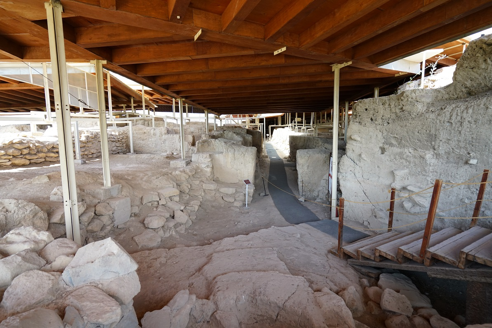

Kültürel Mirasımız: Arslantepe Höyüğü

Arslantepe Höyüğü, Malatya'nın Battalgazi ilçesinde bulunan önemli bir kültürel mirastır.
Arslantepe Höyüğü Hakkında
Arslantepe Höyüğü, Malatya'nın Battalgazi ilçesinde yer alan önemli bir arkeolojik alandır. Tarihi geçmişi binlerce yıl öncesine dayanan bu höyük, Anadolu'nun en eski yerleşim merkezlerinden biri olarak kabul edilmektedir.
Arslantepe, sadece Malatya için değil, Anadolu tarihi açısından da önemli bir yere sahiptir. Bölgede yapılan kazılarda saray yapıları, mühürler, metal eserler ve günlük yaşama ait birçok kalıntı ortaya çıkarılmıştır.
Bu alan, tarih boyunca insanların yerleşik hayata geçişi, yönetim yapılarının oluşması ve toplumsal düzenin gelişmesi açısından önemli bilgiler sunmaktadır. Bu nedenle Arslantepe, Malatya'nın en değerli kültürel miraslarından biridir.
Tarihi Önemi
Arslantepe Höyüğü'nde yapılan çalışmalar, burada erken dönem devlet yapısına benzer yönetim izlerinin bulunduğunu göstermektedir. Bu yönüyle höyük, sadece bir yerleşim alanı değil, aynı zamanda siyasi ve sosyal örgütlenmenin gelişimini gösteren önemli bir merkezdir.
Kazılarda bulunan mühürler, depolama alanları ve idari yapılar; burada düzenli bir yönetim anlayışının olduğunu göstermektedir. Bu durum Arslantepe'yi Anadolu arkeolojisi açısından özel bir konuma getirmektedir.
Öne Çıkan Özellikler
- Malatya'nın Battalgazi ilçesinde yer alır.
- Anadolu'nun en eski yerleşim alanlarından biridir.
- 2021 yılında UNESCO Dünya Mirası Listesi'ne alınmıştır.
- Erken dönem yönetim ve devletleşme yapıları açısından önemlidir.
- Kazılarda mühürler, metal eserler ve saray kalıntıları bulunmuştur.
Malatya İçin Önemi
Arslantepe Höyüğü, Malatya'nın tarihini ve kültürel zenginliğini gösteren en önemli değerlerden biridir. Şehrin sadece kayısı ile değil, aynı zamanda çok eski bir medeniyet geçmişiyle de tanınmasını sağlar.
Bu nedenle Arslantepe, Malatya'nın kültürel kimliğinde önemli bir yere sahiptir ve korunması gereken tarihi miraslardan biridir.